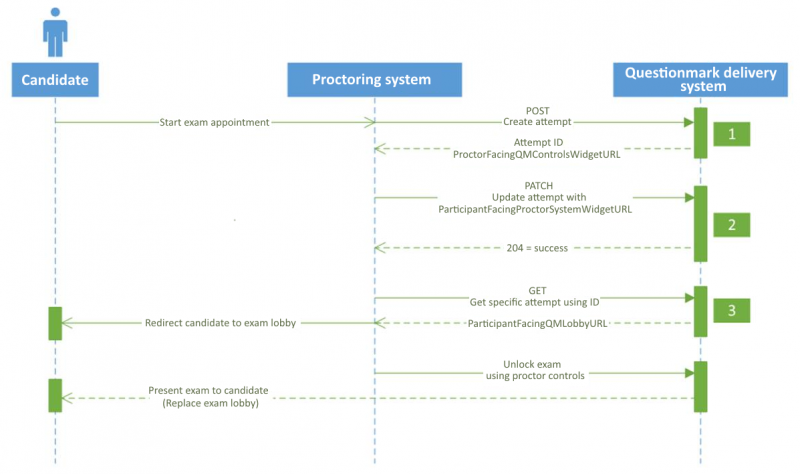
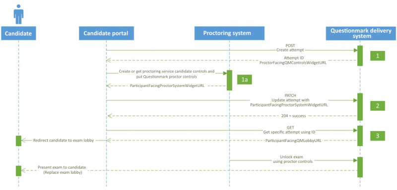

Proctoring Exams¶
This section describes how proctored exams can be launched in
Questionmark’s delivery system using deliveryodata. In this
application we use the term candidate to mean participant and the word
exam to refer to the assessment being taken so as to emphasise the
higher stakes involved when proctoring.
The example assumes that a candidate portal application is to be developed that uses the API to drive an exam process involving online proctoring. Online proctoring refers to exams that are overseen by a Proctor who is connected to the Candidate using a remove video/audio link.
Overview¶
The following two diagrams outline the transactions that occur between the proctoring system and Questionmark’s delivery system (the first diagram) and the transactions that occur between the candidate portal, the proctoring system, and Questionmark’s delivery system (the second diagram).
 Creating a Proctored Exam Attempt¶
First, a proctored exam attempt must be created. Exams are launched
using the deliveryodata.Attempts feed. An exam attempt can be
created with a POST HTTP method request to the Attempts feed URL. Most
of the fields are set automatically, but you must specify the following
parameters:
- ExternalAttemptID
This is an external reference string that you can use to identify this specific attempt. It must be unique. This value represents the proctoring service reservation, registration, or appointment ID for the candidate and the exam.
Example: {81CB516C-CD4D-41A6-A359-25824F0C888D}
- ParticipantID
This is the unique numeric ID of the candidate in Questionmark’s delivery system. When a specific ParticipantID value is used, only that candidate will be able to access the exam attempt.
Example: 987654321
- AssessmentID
This is the Questionmark assessment ID of the exam that is to be attempted by the candidate.
Example: 1234567890876543
- LockRequired
- This is set to “True” to force the exam attempt to be locked pending approval from the proctor.
- LockStatus
- This is set to the same value as the LockRequired parameter (“True” for proctored assessments). This value will be updated to “False” only after the proctor unlocks the exam for the candidate to being.
This transaction occurs between the candidate portal, which may or may not be provided by your proctoring service, and Questionmark’s delivery system.
Request method: POST
Request resource:
https://ondemand.questionmark.com/deliveryodata/<Customer ID>/Attempts
Example POST request:
{
"ExternalAttemptID": "1000",
"AssessmentID": "1234567890876543",
"ParticipantID": "987654321",
"LockStatus": true,
"LockRequired": true
}
Example POST response:
{
"ID":9,
"ParticipantFacingQMLobbyUrl":null,
"ProctorFacingQMControlsWidgetUrl":"https://ondemand.questionmark.com/lobby/400449/proctorwidget/Index/9?nonce=ec4947dc-972f-4701-9ec9-c9e7b137be26×tamp=2015-10-01T15:22:22.0193300Z&role=proctor&signature=db108ad97e546a815370586d60e28ff7b12016a370ed62bae8141574f0fc0b48",
"ExternalAttemptID":"1001",
"ParticipantID":70605997,
"AssessmentID":"3736000003736",
"ResultID":null,
"LockStatus":true,
"LockRequired":true,
"ParticipantFacingProctorSystemWidgetUrl":null,
"LastModifiedDateTime":"2015-10-01T15:22:22.0037078Z"
}
The following parameters are introduced via the POST response:
- ID
This is the internal Questionmark attempt ID generated by the POST request, and it’s the ID used to GET the request for future transactions.
Example: 9
- ParticipantFacingQMLobbyURL
- When the GET command is issued for the exam attempt, the response will include this parameter value. This is the URL that the candidate is directed or redirected toward to start a proctored exam. This value is null on the initial POST response.
- ProctorFacingQMControlsWidgetUrl
This is the URL that a proctor uses to obtain access to the in-exam proctoring controls for this exam attempt.
Example:
https://ondemand.questionmark.com/lobby/400449/proctorwidget/Index/9?nonce=ec4947dc-972f-4701-9ec9-c9e7b137be26×tamp=2015-10-01T15:22:22.0193300Z&role=proctor&signature=db108ad97e546a815370586d60e28ff7b12016a370ed62bae8141574f0fc0b48
- ParticipantFacingProctorSystemWidgetURL
- This is the URL for the proctoring tools that a candidate uses to communicate in real-time with a proctor during the exam. This value is null on the initial POST response when creating the exam attempt. This URL is provided by your proctoring service, typically via its appointment scheduling API, and is added to the attempt with a PATCH command in a subsequent transaction.
- LastModifiedDateTime
This is the timestamp of when the exam attempt was last modified.
Example: 2015-10-01T15:22:22.0037078Z
Creating or Getting the Candidate Controls/Delivering the Proctor Controls¶
If a candidate will be interacting with a candidate portal to take a proctored exam instead of your proctoring system directly, you must add a ParticipantFacingProctorSystemWidgetURL value to the exam attempt via a PATCH command in a subsequent transaction. This is the URL for the proctoring controls that a candidate uses to communicate in real-time with a proctor during the exam. This URL is provided by your proctoring service, typically via their appointment scheduling API, and is the ParticipantFacingProctorSystemWidgetURL parameter of the attempt resource.
Additionally, this transaction allows the candidate portal to deliver Questionmark’s proctoring controls—the counterpart to the candidate controls—to your proctoring system. This URL is the ProctorFacingQMControlsWidgetUrl parameter of the attempt and allows the proctor to unlock, pause, un-pause, add time and terminate the exam.
Updating the Exam Attempt for Proctor Communication¶
The exam attempt expects and requires a URL that can be opened within the Questionmark exam lobby. The exam lobby houses the real-time communication tools that the proctoring service provides to the candidate within the exam. This transaction may be executed by the candidate portal or by the proctoring service. If it’s done by the proctoring service, then that service must know the attempt ID for the given attempt in Questionmark’s delivery system. The Attempt ID is generated in the first transaction.
Request method: PATCH
Request resource:
https://ondemand.questionmark.com/deliveryodata/<Customer ID>/Attempts(<Attempt ID>)
Example PATCH request:
{
"ParticipantFacingProctorSystemWidgetUrl": "https://www.proctor-service.com/candidate-controls"
}
No data is returned in the response of the PATCH request, but a status code of 204 is expected upon a successful request.
Getting the Exam Attempt for Launching the Exam¶
When a candidate shows up for an appointment, the candidate portal or the proctoring system will issue a GET request for a specific attempt ID. All of the parameter values will be available in the response so that the candidate can securely connect with a proctor.
Request method: GET
Request resource:
https://ondemand.questionmark.com/deliveryodata/<Customer ID>/Attempts(<Attempt ID>)
Example GET response:
{
"ID":12,
"ParticipantFacingQMLobbyUrl":"qmsb:url=aHR0cHM6Ly9vbmRlbWFuZC5xdWVzdGlvbm1hcmsuY29tL2xvYmJ5LzQwMDQ0OS9sb2JieS9TeXN0ZW1DaGVjay8xMj9ub25jZT0wYTM2MDViZS05MjQ3LTRmNjUtOWZhNS0yMDQ1YTdhZDgzNGQmdGltZXN0YW1wPTIwMTUtMTAtMDFUMjE6NDE6NDYuNzA2OTYwMFomcm9sZT1wYXJ0aWNpcGFudCZzaWduYXR1cmU9OWViYmY4ODkwOTY4NTFkZTAwYmVhYzkzOWVjYmJmYmZjMzRhOGVmNGNhOTRkYjY2MTEwNjA3NzI4NjI4MmU0Nw&sig=330991facd937c0e15331941b4ab76015ffcb6de21e4404e69511b653107eb59",
"ProctorFacingQMControlsWidgetUrl":"https://ondemand.questionmark.com/lobby/400449/proctorwidget/Index/12?nonce=9c9f25cf-074d-48da-9e75-3f63fa1915a3×tamp=2015-10-01T21:41:46.7069600Z&role=proctor&signature=110df2f131b1edcb02bd76452fb2cf71f048545525966b57b4ebb2f5f838530f",
"ExternalAttemptID":"1005",
"ParticipantID":70605997,
"AssessmentID":"3736000003736",
"ResultID":null,
"LockStatus":true,
"LockRequired":true,
"ParticipantFacingProctorSystemWidgetUrl":"https://www.proctor-service.com/candidate-controls",
"LastModifiedDateTime":"2015-10-02T01:41:12.53Z"
}
The parameters contained within the GET response are described below.
- ID
- This is Questionmark attempt ID originally generated by the POST request, and it’s the ID used to GET the request for future transactions.
- ParticipantFacingQMLobbyURL
This URL is a short-life, single-use URL that’s presented to the candidate to launch the assessment. If the assessment requires Questionmark Secure Browser, this URL will be an encrypted launch string that will launch the secure browser directly. Questionmark Secure 5.8 or later is required for this, and the candidate must have installed the browser prior to clicking the URL to the lobby. Unlike assessments scheduled through Enterprise Manager, this link does not take you to the Questionmark Secure download page if it’s not installed. The example value shown below is an example URL for a proctored attempt requiring Questionmark Secure.
Example:
qmsb:url=aHR0cHM6Ly9vbmRlbWFuZC5xdWVzdGlvbm1hcmsuY29tL2xvYmJ5LzQwMDQ0OS9sb2JieS9TeXN0ZW1DaGVjay8xMj9ub25jZT0wYTM2MDViZS05MjQ3LTRmNjUtOWZhNS0yMDQ1YTdhZDgzNGQmdGltZXN0YW1wPTIwMTUtMTAtMDFUMjE6NDE6NDYuNzA2OTYwMFomcm9sZT1wYXJ0aWNpcGFudCZzaWduYXR1cmU9OWViYmY4ODkwOTY4NTFkZTAwYmVhYzkzOWVjYmJmYmZjMzRhOGVmNGNhOTRkYjY2MTEwNjA3NzI4NjI4MmU0Nw&sig=330991facd937c0e15331941b4ab76015ffcb6de21e4404e69511b653107eb69
- ProctorFacingQMControlsWidgetURL
In order to unlock the test, the proctor will need access to the proctor-facing controls. This is the URL from which the proctor obtains the in-exam controls for this exam session. The controls available to a proctor are
- unlock,
- pause,
- play,
- add time, and
- terminate.
This value is generated uniquely each time a GET request is made and is valid for a limited period, so you must read the attempt entity when the candidate is ready to take the test and pass this URL to the API of your proctoring service. Once communication has been established and the proctor has completed any required pre-exam checks, the proctor must use their own system to open the ProctorFacingQMControlsWidgetUrl previously passed to the proctoring system. The proctor will then have access to the controls for unlocking and managing the test.
Warning
For security reasons, you must not pass this URL to the candidate’s browser. It must be passed privately to your proctoring system.
Your proctoring system API may provide you with a new or updated ParticipantFacingPrctorSystemWidgetUrl in exchange for the proctor-facing URL. In this case, you must update the exam attempt with the new value of this URL using OData’s PATCH command.
- ExternalAttemptID
This is an external reference string that you can use to identify this specific attempt. It must be unique. Represents the proctoring service reservation, registration or appointment ID for this candidate and this exam.
Example: {81CB516C-CD4D-41A6-A359-25824F0C888D}
- ParticipantID
This is the unique numeric ID of the candidate in Questionmark’s delivery system. When a specific ParticipantID value is used, only that candidate will be able to access the exam attempt.
Example: 987654321
- AssessmentID
This is the Questionmark assessment ID of the exam that is being taken by the candidate.
Example: 1234567890876543
- ResultID
This is the unique ID of the result associated with the exam attempt. The value will be null until the exam is unlocked by the proctor.
Once the exam has started, you can retrieve the attempt and examine the ResultID field to find the identifier of the result associated with this attempt. You can use the
deliveryodata.Resultsfeed to read the details of this result or pass it to QMWISe. The following new status values were introduced for online proctoring:- The proctor has paused the exam
- The proctor has terminated the exam
For a complete list of status codes and their meanings refer to
A_Result.Status.- LockStatus
- This is set to the same value as LockRequired (“True” for proctored assessments). This will be updated to “False” only after the proctor unlocks the exam for the candidate to begin.
- LockRequired
- This is set to the same value as LockRequired (“True” for proctored assessments).
- ParticipantFacingProctorSystemWidgetURL
This is the URL of the proctoring tools that a candidate uses to communicate in real-time with a proctor during the exam. This value is null on the initial POST response when creating the exam attempt. This URL is provided by your proctoring service, typically via its appointment scheduling API, and is added to the attempt with a PATCH command in a subsequent transaction. Once the candidate has launched the test using the ParticipantFacingQMLobbyURL, their browser will open the ParticipantFacingProctorSystemWidgetUrl to initiate communication with the proctor.
Example:
https://www.proctor-service.com/candidate-controls
- LastModifiedDateTime
This is the timestamp of when the exam attempt was last modified.
Example: 2015-10-01T15:22:22.0037078Z